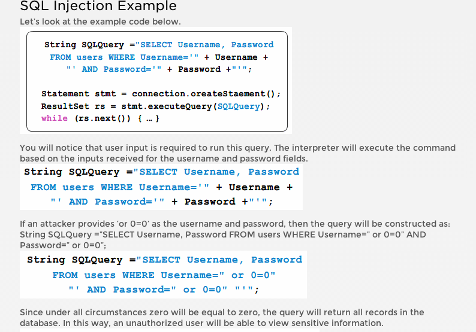
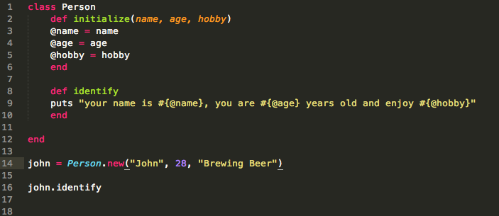

Rails
Rails is the framework for which we can build our web apllications that run our ruby code. It uses the Model View Controller pattern and has several advantages over other frameworks which we will examine in this post. For one, it is completely open source. It was designed to enhance the idea of convention over configuration. What does that mean exactly? Here is an example from http://guides.rubyonrails.org/getting_started.html,"Convention over Configuration" means a developer only needs to specify unconventional aspects of the application. For example, if there is a class Sale in the model, the corresponding table in the database is called sales by default. It is only if one deviates from this convention, such as calling the table "products sold", that the developer needs to write code regarding these names. Generally, Ruby on Rails conventions lead to less code and less repetition"
Rails also gives us built in testing for our web apps. Essentially we get three different environments when setting up a rails app; Development, testing, and production. Each behaves slightly differently, making your entire software development cycle easier. For example, Rails creates a fresh copy of the Test database for each test run. We also have access to metaprogramming, or programs that write programs for us. Rails relies heavily on metaprogramming for conventional code and can help do a lot of the work for us. Along those same lines, Rails introduces the Active Record framework, which saves objects to the database. The Rails version of Active Record discovers the columns in a database schema and automatically attaches them to your domain objects using metaprogramming.
Rails also deploys a scaffolding. Tutorials Point gives a great desription."Scaffolding: You often create temporary code in the early stages of development to help get an application up quickly and see how major components work together. Rails automatically creates much of the scaffolding you'll need."
SQL Injection
SQL Injection is a type of web application security vulnerability in which an attacker is able to submit a database SQL command which is executed by a web application, exposing the back-end database. A SQL Injection attack can occur when a web application utilizes user-supplied data without proper validation or encoding as part of a command or query.The following is a code example from http://www.veracode.com/security/sql-injection.
 The various threats of this type of attack can cause catastophic damage to your database and a significant loss or destruction of information. With access to your database, hackers can retreive sensitive customer information, change information needed for your application to run, or delete entire sections of your database completely. The financial impact this can have on any business are huge, not to mention the fact that if you lose customer information, you can count on that customer not being happy/satisfied with your organization.
SQL injection attacks are still to this day one of the more common form of cyber attacks being recorded on the web. The good news is there are a variety of ways to prevent these attacks.
One of these is by avoiding dynamic sql statements. The use of prepared statements (queries with parameters) is one method for protection. They are simple to write, and easier to understand than dynamic queries. With parameterized queries let us define all the SQL code, and then pass in each parameter to the query later. This coding style allows the database to distinguish between code and data, regardless of what user input is supplied.
Another method of protection is stored procedures. They have the same effect as the use of prepared statements in that they require the us to define the SQL code first, and then pass in the parameters after. The difference between prepared statements and stored procedures is that the SQL code for a stored procedure is defined and stored in the database itself, and then called from the application.
Rather than listing the other methods for you, let me link to a page that has more info then I could hope to offer. Here is a website that offers a solid list of ways to prevent SQL injection.Read on and enjoy:
10 Ways to Prevent or Mitigate SQL Injection Attacks
Object Oriented Programming vs. Functional Programming
We have so far in our curriculum delved into object oriented programming. I think of this type of programming being modeled on the world. In the world we have objects that can be grouped together and classified ( or put into classes). These object have various attributes, or methods. For example, all car could be put into a car class. They all have similar attributes of acceleration, braking, and MPG. But they could also have attributes that other cars didn't share like electric cars, convertibles, and racecars. Object orientation allows us to treat all cars as objects and all of their attributes as objects as well. Assigning the different attributes to the different abjects as we see fit. We can inherit and abstract these objects together to make our program interact as we see fit. It's excitingly flexible and can be very useful for when you have to add new data or information needed in your program.Functional Programming on the other hand is just that, it focuses on functions and has it roots in mathematical calculation. Each function has arguments which are also functions, they are designed to accept functions and return them, generally do not rely on an outside state for their function. This of course could be the case with Object Oriented programming if the programmer designs the program in this fashion.
Functional programming can be a more optimal solution when you have a program you expect to have a more static state of things, but need to change functions often, whereas OOP can be a better solution when you have more set state of functions/methods, but are adding new objects over time. Enjoy this video where a group of programmers have a bit of an argument on the subject. Who doesn't like a good argument?
Classes
Ruby is an object oriented language and as such, everything in ruby is an object. How many times have you heard that statement while reading through tutorials? I'm gonna say at least 73, probably more. But classes play a large role in defining object when we are talking about object orientation. An object-oriented program involves classes and objects. A class is the blueprint from which individual objects are created. Each of the objects we create can have similar methods and attributes, therefore may want to create a class to house these similar objects so they can access on the various methods we may create within the class. Objects created at runtime from a class are called instances of that particular class. We define classes simply by using the word class and naming the class. Standard convention is to use an uppercase word or camelcase if more than one word. Lets look at an example.
So we have defined a class called Person, what is that funny initialize thing? Well, that my friends tells our class that every time we create and instance of an object within the Person class, that object will have these attributes. Initialize is our constructor method for our class. If we were to create these attributes outside of the method and only for each instance of the object, those variables could only be accessed by that particular object, not all the objects of the class. The next thing you will see is that I created a method called identitfy so we can call the attributes of an instance of the Person class when they are added. So I have created an instance of the class object called john, given it some attributes, and the used the identitfy method to put those attributes to the screen as a readable sentence.
Hashes vs. Arrays: The Showdown
Both array sand hashes are very flexible data structures that have the ability to store large amounts of information. Strings? No sweat! Integers? Of course! Other arrays? Oh yeah! But not all of those things mixed up, right? Hellllz Yeahh! All kidding aside, both hashes and array have the ability to store various types of data and can be added to and subtrcacted from whenever we feel like it.
One of the main differences is that arrays store information based on an index. For example if I had an alphabet array of:
alphabet = ["a", "b", "c", "d", "etc."]
the index values would be:
a[0], b[1], c[2], d[3], etc[4].
But we can also view the index values as negative integers starting at the last value which is equal to -1. So Those values again would be:
a[-5], b[-4], c[-3], d[-2], etc[-1]
Hashes on the other hand are ordered with key/value pairs and do not necessrily have a set order like an array. Each key has a value that is matched to it and those objects can be called using either the key or the value. It looks like this:
favorite_food = {
"breakfast" => "bacon",
"lunch" => "sandwich",
"dinner" => "pizza"
}
As you can see, each mealtime is a key, and each of the favorite foods is a value. We can use hashes to store and access information together based on specific keys or values which makes it great for things like a lubrary or cataloging.
Since we can access information based on index with an array, it is ideal for use when we need keep information in an ordered list, or sort information and access it based on its position. Just as a final note, in the examples above I created the array and hash using the literal syntax whch is just assigning a variable. We can also creat these by calling
Array.new and Hash.new.
So now that you know the difference, who wins the showdown?
Javascript
Javascript has many benefits. First of which it is an object orinted language, like ruby. This allows us to create unique classes and objects and gives us the functionality to change those objects(mutable) on the fly as our program needs. We can make new functions and properties of the objects without being inside the objects(prototype). and we can use the classes of object to define other objects(inheritance). With OOP we can develop fast, lightweight programs that are easy to debug, maintain, and expand. Javascript is also fairly easy to learn compared to some other languages. It's powerful and operated on the client side which allows your program to run on the clients machine rather than running on the server(alhough I believe you can use javascript on the server side as well). Javascript is supported in all browsers and by all devices, also having libraries like jquery and dojo that increase it ease of use and functionality
Margin vs. Border vs. Padding
The best way I can describe the difference between these is that the border is the space around your element that touches the element. It can be as thick as you need and styled in vaious different ways from solid, dotted, or even using images as a border. It can also be manipulated to be different colors and shapes using the border-radius property. The padding area is the space between your content and the border. If you do not declare a padding value it will be set to default which will make your content align cloely with the border of your element. Margin is a transparent area around your element. By setting margins you can push the various element on your page around, but also give each element its own space from your other surrounding elements or the browser window itself. I ahve seen other technical blog posts with handy pictures showing the difference and thought I'd show it below as well for a handy visual aid.

Classes vs. ID's
I'm still a little shaky on this subject, but from my understanding an ID is unique to that page. You can only name a unique ID once for an element and that ID cannot be reused for other on the page. Classes can be applied to multiple different elements on the page and you can have multiple classes for each element. I think that is where the difference ends. The capabilities in terms of using classes and ID's to point to and style different elements are the same
Relative, Absolute, Fixed Positioning
Absolute positioning is when an element is positioned relative to its parent/ancestor element. If there is no parent element it will be positioned in relation to the browser window. Relative positioning puts the positioning of an element reltive to its normal position. Fixed position locks an elements positioning so it will not move, even if the browser window changes or is scrolled.